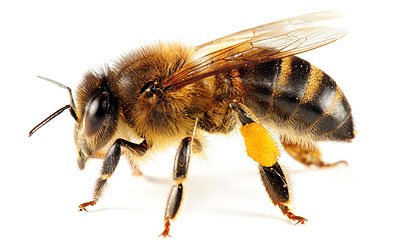
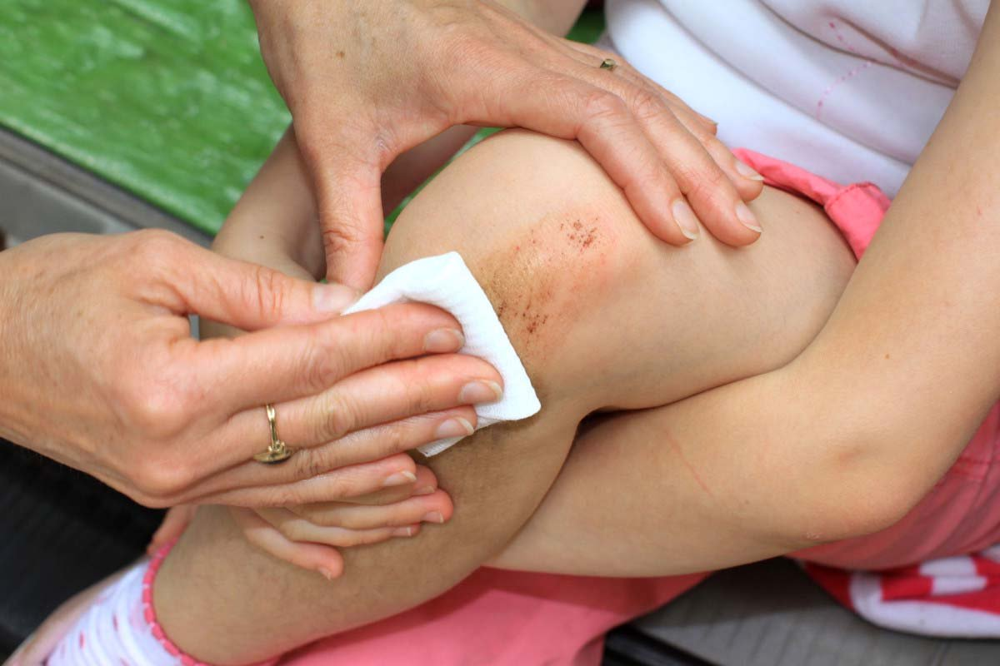
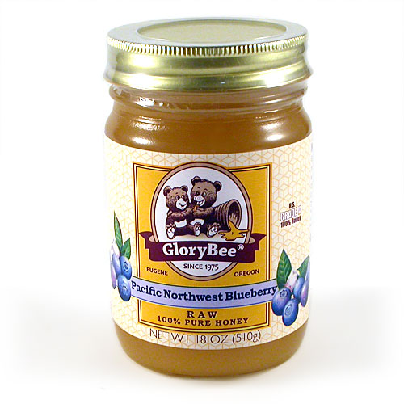
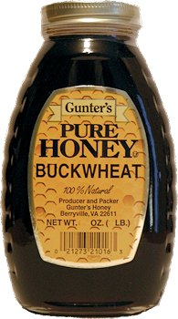
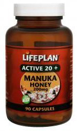

Honey Throughout History
Honey has been used since ancient times both as a food and as a medicine. Apiculture, the practice of beekeeping to produce honey, dates back to at least 700 BC. For many centuries, honey was regarded as sacred due to its sweet properties as well as its rarity. It was used mainly in religious ceremonies to pay tribute to the gods, as well as to embalm the deceased. Honey was also used for a variety of medicinal and cosmetic purposes. For a long time in history, its use in cooking was reserved only for the wealthy since it was so expensive that only they could afford it.
Honey is mentioned in the Quran as having incredible healing effects against disease. There is a Hadith quoted from the Islamic Prophet Muhammad in which he recommends people to eat honey, and even calls it the sweetest food. According to Imam Ali, whom was the cousin and son-in-law of Muhammad, “Honey is the healing of all diseases and there is no disease in it. It reduces phlegm and refreshes the heart.”
Years before, man discovered the existence of microbial factors like bacteria and fungi; honey was used in surgical operations and the treatment of burns. Ancient Greeks believed that honey can delay aging and obviate fatigue. German folk stories explain that honeybees are put in this world to produce wax for the churches. In Egyptian myths, the origin of honeybees is from “Ra” the god of sun. Honeybees had also been used as the symbol of Hindu gods, Krishna Indira and Vishnu. In some parts of Europe, people believed that honeybees were messengers of God and even kept them in some monasteries of Europe.


Benefits:

1. After 1400 years, studies now demonstrate that fructose (which is an important part of honey’s sugar) is sweeter than glucose, making it sweeter than most other sweeteners. This allows for smaller portions of honey to be consumed when compared to other sweeteners, which is much better for people with diabetes. Actually, 97% of honey is a combination of fructose and glucose giving it an uncanny sweet taste. Because of its natural high fructose content it takes longer for the body to absorb, which provides for longer sustained periods of energy. Fructose also happens to break down inside of the liver first and is stored there until blood glucose levels fall, so excess glucose isn’t found in the bloodstream or brain… another benefit for people with diabetes. This allows the body to have a proper opportunity to continuously absorb it; rapidly spreading in the blood, helping the brain, and preventing feelings of fatigue. Also, studies have shown that the highest amount of sugar absorption happens when glucose and fructose are equal to each other, like in honey. Thus eating honey is far better for the elderly as well, providing zero negative side effects. However, some will look to fructose as being the cause of weight gain and will condemn honey… this is because they believe that once fructose enters the liver, it transforms to fat. But, recently studies have shown that even though fructose turns into fatty acids, they’re only harmful if it comes from processed foods and beverages which contain extra amounts of fructose. When fructose comes from natural fruits and vegetables (and honey) there are no negative effects or weight gain problems. Again, because the natural amount of fructose is virtually equal to glucose, there is no extra fat gained and instead the body absorbs the sugars better.
2. In fact, eating 1 tablespoon of honey right before you sleep on a regular basis may slightly help you lose weight naturally before you wake up in the morning. This is because honey fuels the liver, speeds up fat-buring metabolism, eases stress hormones, and helps us get a better night’s sleep. Because your blood sugar levels are balanced, your body is then able to focus on burning excess fat instead… but just don’t expect to see any large weight loss results here.
3. It is also proven that each type of honey will have the same characteristics of the plant the nectar of which is predominant in it, and thus will be effective in healing specific diseases. For example, “Eucalyptus” honey disinfects lung, intestine and urinary system and is recommended for all respiratory system diseases. “Clover” honey is useful for athletes and everyone who is too active and has low physical power. “Tilia cordata” honey is anti-spasm and acts as a tranquilizer for nervous system and mitigates insomnia. “Thymus” honey is recommended for infectious diseases, physical weakness, ulcers, and coughing. In fact 89% of the herbs whose pollens were present in honey had been recorded as being medicinal herbs including: Berberis vulgaris, Cotoneaster ovata, Astragalus aureus, Achillea vermicularis, Salvia officinalis, Alcea ficifolia, etc. Lucky for us, all of the medicinal benefits of the above mentioned plants are retained inside of the honey. Because of the Berberis herb alone, with it consisting of 85% of the pollen/nectar content in honey, it is effective in treating and preventing vascular obstruction, kidney and gallbladder stones, urinary organ diseases, etc. The antibiotics, disinfectants (inhibin and etc.), aromatics, and herbal essences contained within honey plays an important role in also healing digestive and vascular diseases, as well as recovering of wounds. Honey is a good source of antioxidants; it plays a great role in preventing cancer and heart diseases, and spreads in blood rapidly. Honey’s amber color comes from flavonoids, the same class of antioxidants found in berries, citrus fruits, tea, wine and dark chocolate. The specific nutrients found in honey depend on the floral origin (blueberry, clover, fireweed, manuka, wild flower). Darker varieties of honey (such as buckwheat) generally offer higher levels of flavonoids. Raw honey offers immune-boosting benefits.
4. Honey can be used for a sore throat. Studies have shown that specifically with child with a night time cough that used buckwheat honey was more effective allowing them to sleep, then over the counter cough serums.

5. Putting honey on your skin to treat a cut, burn, scrap, or ulcer due to antibacterial studies. Women with a cesarean section, honey is shown to be more effective cleaning the wound and helping it to heal more than alcohol, reducing the number of infections. Because of its consistency you can put it on top of a cut and place a Band-Aid over it, creating a layer to protect your skin from the environment. The types of sugars tend to pull water out of the wound, preventing fungi and viruses from growing. An enzyme in honey creates hydrogen prooxyoide, which is an antiseptic… which gets created naturally right ontop of the wound. Propalist is an anti-viral and anti-bacterial substance that also helps to prevent infection.
6. Honey contains propalist, which is shown to be anti-bacterial… which means it might not be as bad for our teeth, or as likely to promote cavities. This anti-bacterial compound is believed to counteract the sugar that destroys our teeth.
7. Honey is a valuable nutrient that plays an important role in providing carbohydrates, fats and even amino acids and proteins. It is also efficient in supplying vitamins B2 and B6, and minerals iron and manganese.
8. A spoonful a day keeps free radicals at bay. A study showed that after eating 4 tablespoons of buckwheat honey daily for only 29 days straight, protective antioxidant compounds in their blood was significantly raised.
9. Out of every possible “sweetener” raw, natural honey is the healthiest choice for those with high cholesterol and Type 2 Diabetes. According to various studies it reduced total cholesterol by 7%, triglycerides by 2%, C-reactive protein by 7%, homocysteine by 6% and blood sugar by 6%. It even increased HDL (good) cholesterol by 2%. C-reactive protein and homocysteine both provide a significant risk factor for cardiovascular disease.
Remedies:
1. Warm Milk (or chamomile tea) and honey helps induce sleep. It can also improve your digestion and bowel movements.
2. 15 ml of liquid honey, 80 ml of orange juice, and 70 ml of natural yogurt blended together helps battles hangovers.
3. Vinegar and honey acts as a self-detox for many ailments such as arthritis even.
4. Cinnamon and honey has been used in oriental medicine for centuries and is claimed to cure many ailments including even hair loss and bad breath.
5. Lemon and honey can help one lose weight.



Today, lots of technological advances have made us successful with most health care issues. We have found ways to treat different diseases through advanced surgeries or new drugs. However, we unfortunately do not pay enough attention to the foods we eat. Traditional foods are substituted by harmful fast foods and processed foods just for the convenience of time. These types of food will ultimately lead to increasing diseases over time. Access to a “perfect” food especially for the elderly is an issue all around the world, yet most people don’t realize that something as common as honey is actually the answer most people were looking for.
*Note: Remember that the quality of honey is a function of the plants and environment from which pollen, saps, nectars and resins were gathered. Other substances found in the environment—including traces of heavy metals, pesticides, and antibiotics—have been shown to appear in honey. The amount varies greatly.
Do not feed honey-containing products or use honey as a flavoring for infants under one year of age; honey may contain Clostridium botulinum spores and toxins that can cause infant botulism, a life-threatening paralytic disease. Honey is safe for children older than 12 months and adults.
Make sure you’re purchasing REAL honey! Most supermarkets only carry the fake stuff or the honey that’s had all the good stuff voided or a combo of real honey and corn syrup. Also, the pasteurized honey is basically all fructose since the high temperature basically changes the molecular structure, as well as takes out many vitamins (for example, vitamin C is killed at high heat. That's why orange juice has to be fortified). If you’re having trouble finding this in your local supermarket, you can go to manukanatural.com if you want pure manuka honey that is certified with an antibacterial rating of UMF (uniwue manuka factor) of 15+, 18+, or 20+. This honey is what hospitals and clinics are using to treat MRSA (multidrug-resistant Staphylococcus aureus, in other words a germ that is resistant to most antibiotics).
Blueberry honey by GloryBee farms is also very good. The fact is that the variety of honey can compare to the variety of wine, there's almost an endless amount of tastes and colors, all depending on the flower that the honeybee pollinated right before producing the honey. Honey comes in a range of colors including white, amber, red, brown and almost black. Its flavor and texture vary with the type of flower nectar from which it was made. While the most commonly available honeys are made from clover, alfalfa, heather and acacia flowers, honey can be made from a variety of different flowers, including thyme and lavender. Try to support local beekeepers if possible.
Wisdom-Square › Alternative Medicine › Honey Throughout History